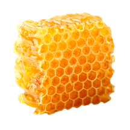
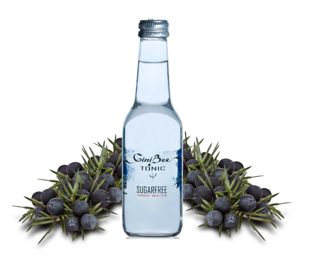

GiniBee gin Premium in Unique se ponašata s svojo edinstvenostjo, saj je vsaka šesta brinjeva jagoda namocena v slovenski med - slovenske cebele med. Svetovno je znano, da je naša cebela (Kranjska sivka ali latinsko Apis mellifera carnica) najbolj pridna delavka med vsemi svetovnimi cebelami in absolutno najprijaznejša do cloveka - vse to se odraža v obeh GiniBee ginih. S svojo prisotnostjo, poleg medu, dajejo GiniBee ginu poetsko noto tudi lipov list, vrtnica, ingver, pomaranca, kumara, limona in koriander.

GiniBee gin Premium se dodatno ponaša s svojo edinstvenostjo, saj je narejen iz 3 leta staranega brandyja v hrastovih sodih, ustvarjen za zahtevne pivce gina in po mnenju svetovnih poznavalcev in ocenjevalcev ginov je GiniBee gin Premium gin kateri ne potrebuje tonica. Vse te sestavine pripravijo naše burboncice do zibanja v ritmu magicne pesmi okusov.

GiniBee Tonic SUGAR FREE je prvi in edini slovenski tonic brez sladkorja, zato ju zmešana skupaj lahko pijemo brez slabe vesti o nabiranju odvečne
maščobe na telesu - prednost pri njima je tudi ta, da je jutranji glavobol preteklost. Omenjene GiniBee produkte smo skrbno razvijali več let v želji ugajanja vsakemu ljubitelju gina - ocena je na vaši strani, ponosno pa lahko poudarimo, da smo naše okuse več kot zadovoljili. Naj vam pridih Slovenije prinese neskončnost, užitek in svežino.